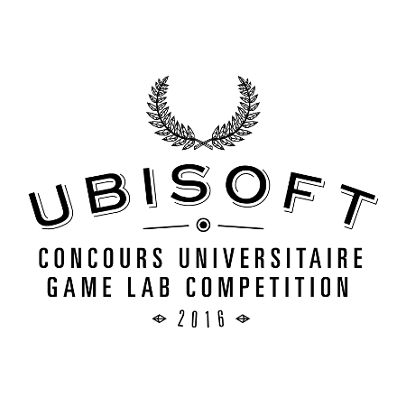

About

Who am I?
I'm currently studying Software Engineering at Montreal's ETS University, from which I'll graduate in December 2017. I love competitive programming, backpacking and trekking. My software engineering interests are diverse, but I'm especially excited about the following areas:
- Computer Graphics (OpenGL/Direct3D)
- Virtual & Augmented Reality
- Video Games Development
Notable Events
-

March 2016
Ubisoft Montreal Game Lab Competition 2016
Between January and March 2016, I participated in the Ubisoft Montreal Game Lab Competition, where teams of 8 full-time students had to create a game in less than 10 weeks. My team and I created Astral Tides, a game that won Best Art Direction and got nominated in 6 out of 8 categories.
-
September 2015
Autodesk
In September 2015, I did an internship at Autodesk. There, I worked on Revit Live using the newly released Stingray Engine. Even though Revit Live is a 3D visualization tool for architects and not technically a game, Stingray was perfect for the task.
-

March 2015
Pixel Challenge Quebec
In March 2015, I went to the Pixel Challenge 2015 to compete in the Amateur/Student competition, where my team and I got the second place award with À Bout de Souffle. It was my first game jam and I thoroughly enjoyed it.
-

September 2014
Behaviour Interactive
In 2014, I got my first internship at a video games development company: Behaviour Interactive. I had the chance to work on Home: Boov Pop for about 7 months and I learned how to use the Unity game engine.